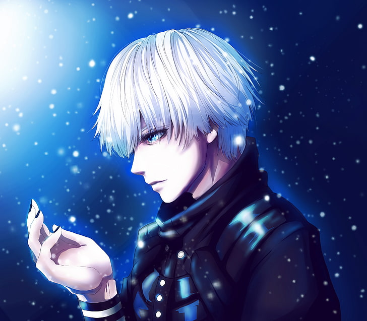

- 


En esta oportunidad, este proyecto esta basado en la creatividad,
habilidad y significado de los dibujos de usuarios en una vista virtual.
Si bien, hoy en día es todo por internet, durante el 2020 inicios de
la pandemia fue complejo realizar este proyecto debido ala gravedad de la
situación, sin embargo, durante este año se decide dar una oportunidad
e implementar un sitio web que pueda representar el arte del dibujo animé
llevandolo a cabo en una plataforma web. Sin embargo, entregamos contenido propio
de imagenes ilustradas que han sido realizadas por la creadora del sitio web, ya que
es un don que no es conocido y la idea es que se expanda por el mundo.
¿Cuál es el objetivo?
El objetivo es que esta plataforma web sea un medio publicitario para que usuarios
de distintos navegadores puedan acceder a los dibujos y con ello comprar lienzos de artistas
nacionales e internacionales, comisionarlos y entregarles la oportunidad de promocinar sus más recientes
trabajos al público de la web y redes sociales.
Las ideas principales es innovar, realizar un cambio del dibujo manual a digital
y ambiental, ya que es una oportunidad de disminuir la tala de árboles y entregar las
herramientas a personas que quieran crecer con su trabajo.
Finalmente, si desean saber más de nuestro sitio web y conocer
los dibujos, tenemos nuestras redes sociales y podrán conocer quienes
son los creadores de "Image/Board" y comentarios de youtubers famosos en este 2021.
¡Bienvenid@s a Image/Board!